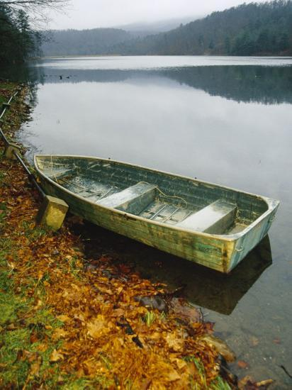
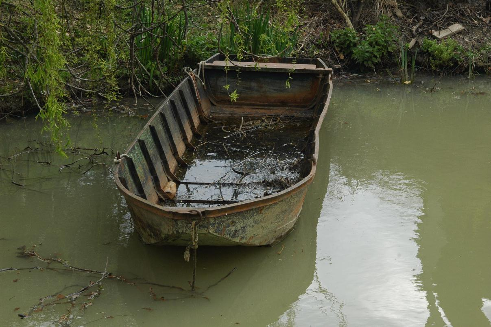

Our company partners with the illustrious and newsworthy Scaly Salmon, the trawler most famous for capsizing six times last year. You, too, can feel like you're breaking headlines when you stow away in the fish barrels, for a modest fee, and brave the waters with our swashbuckling crew! The Scaly Salmon does not come all the way to Isla Paradisia. Clients will be removed from the vessel two miles from shore and are expected to secure their own transportation.
Isla Paradisia provides the ultimate experience for our clients, allowing them the opportunity to travel to the resort rustically, living like the pioneers. All clients will be provided an authentic rowboat off the Pacific Coast Highway, and Deluxe Guests will also be provided two oars. We give our guests the opportunity to feel a sense of accomplishment when they finally reach our cozy shores.
 